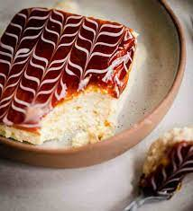

Trilece

Desccription
Trilece, also called tres lecehes cake of Three-Milk cake, is a cake
originating from the Balkans. It is a soft sponge cake that is soaked
in a mixture of three milks. Traditionally, int is covered with caramel.
It can be ejoyed cold, after a meal or at tea time.
Ingredients
- 6 eggs
- 100g sugar
- 200g flour
- half a pastry
- 1 vainlla sugar
For topping
- 400ml of sweet cream
- 300ml of condensed mikl
- 800ml of normal milk
- 300g caramel cream for coting
Steps
- Beat the egg whites adn gradually add the suggar and vanilla sugar..
- When they are beaten, add the egg yolks ont by one , mix and slowly
add flour mixed with baking powder..
- When you add the flour, turn
of the mixer to the lowest speed and just mix gently..
- Pour the mixture int a pan lined with paper and bake fo about 20-25 minutes
at 180 degrees.
- Let the sponge cake cool a little, then take it out of the pan and pierce
ot om several places wit a knife.
- Pout the sweet cream int the pan, then place spnge cake upside down on it.
- Let it stand for about 10 minutes, ten mix the milk and condensed milk and pour it
over the sponge cake from above.
- Let it stand for a while so that milk absorbs wellm then coat it with caramel cream